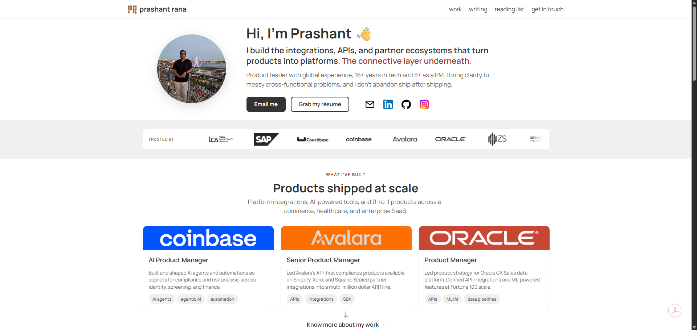

Other AI tools write your portfolio for you, in one shot. Here you get a fast first cut, then keep sharpening it until it sounds like you. You bring your own site builder.
For people with real work worth showing: PMs, marketers, consultants, and builders who want a portfolio that sounds like them and doesn't go stale.
Other tools generate a finished page in one shot. Here you get a fast first cut, then run it through the loop until it's sharp and still sounds like you. It all runs inside Claude Code, or the Claude desktop app.
Same line. Sharper each pass. Always your voice. Run it as many times as it takes, then again whenever your work changes.
Draft a B+ version in minutes, then sharpen it on a loop, voice-check, optimize, repeat, as many passes as it takes.
Built from what you've actually written, and re-checked every pass. No template tone, no dropdown of professional, friendly, bold.
Every story you run adds to what the kit knows about your work and voice. A one-shot tool starts from zero each time; this one compounds.
A set of coordinated skills, not one big generator: a fast first cut, then a tight loop of draft, voice-check, optimize, repeated until it's sharp.
Bring your own (v0, Framer, Webflow, plain HTML, a designer), or let a coding tool like Claude Code or Cursor build it for you. The kit makes the words and keeps them current; you pick how the site gets built.
You don't pick a theme and pour yourself in. You bring your work; the words come out sounding like you.
It does the craft and the upkeep with you. You make the calls, and pick up how AI works on something you actually need.
I built this for my own portfolio. It worked, so I'm sharing it with whoever wants it.
Not a mockup. A real portfolio whose words came from the kit, kept sharp ever since. The site itself I designed and built myself, the way you will. Every time I ship new work, the content gets refreshed.

Shipped yours with the kit? Let me know — I'll feature it if I can.
It's a set of Claude skills, not a plugin and not a marketplace. Three steps and you're working.
Runs in Claude Code, or Claude Cowork on Desktop.
v0, Framer, Webflow, plain HTML, a designer. The kit hands you finished words and keeps them current; you handle design and build.
Not yet. Claude Cowork doesn't support custom plugins, so there's no button to click. If that changes, I'll add one.
You don't run every skill every time. Pick the route for what you're doing, left to right.
Two rules of thumb: run setup and find-my-voice once, and always end a piece with voice-guardian, then quality-check, before it goes live.
The writing samples do real work: they're how it learns to sound like you.